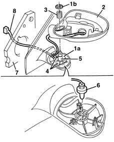

7005R90 DOOR MIRROR ADJUSTMENT CABLE LOOM - R.R. OR REPLACE.
- Path
- Procedures > 70 FITTINGS > 7005 PASSENGER COMPARTMENT FRONT SIDE DOORS > 7005R front door mirrors > 7005R90 DOOR MIRROR ADJUSTMENT CABLE LOOM - R.R. OR REPLACE.
- Kind
- repair procedure (removal / refitting; the operation number is the code)
- Applies to
- all engines; all production periods
- Interactive page
- https://sloeber94.github.io/elrnDB-lYpsln/en/#/2429526
Applies to: all engines; all production periods
 Removing
Removing
 Refitting
Refitting7005R30 electrically controlled door mirror (one) - r+r
7005R35 door mirror reflector - r r
7005R36 door mirror motor - r r
7005R37 door mirror boot - r r
1. Mark the position of the retainer (1b) on the pin (1a) (so that the spring (3) is correctly loaded when refitting) then release the retainer (1b) from its housing.
2. Remove the mirror shell.
3. Keep the spring.
4. Undo the bolts.
5. Remove the flange and pin.
6. Release the outside temperature sensor from its housing.
7. Release the seal from its housing.
8. Remove the cable loom, including the outside temperature sensor, releasing it from the retainers.

Applies to: all engines; all production periods
Refitting
RemovingCheck that the wiring is undamaged and that the individual conductors are firmly attached to the connections.
If necessary, check the continuity.
Position the temperature sensor in its housing.
Position the cable loom and seal.
Fit the flange and pin and fasten using the bolts.
Position the mirror shell and spring.
Fit the retainer in the position marked previously.
7005R37 door mirror boot - r r
7005R36 door mirror motor - r r
7005R35 door mirror reflector - r r
7005R30 electrically controlled door mirror (one) - r+r
Check that the mirror is working properly.
Topics linked from this page (4)
- 7005R30 electrically controlled door mirror (one) - r+r
- 7005R35 door mirror reflector - r r
- 7005R36 door mirror motor - r r
- 7005R37 door mirror boot - r r